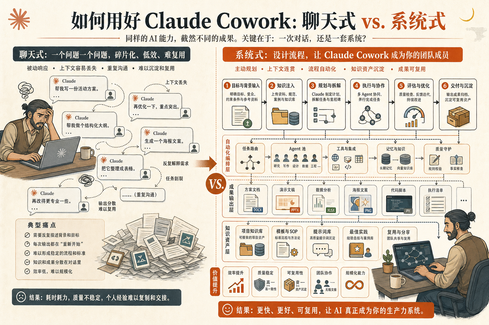
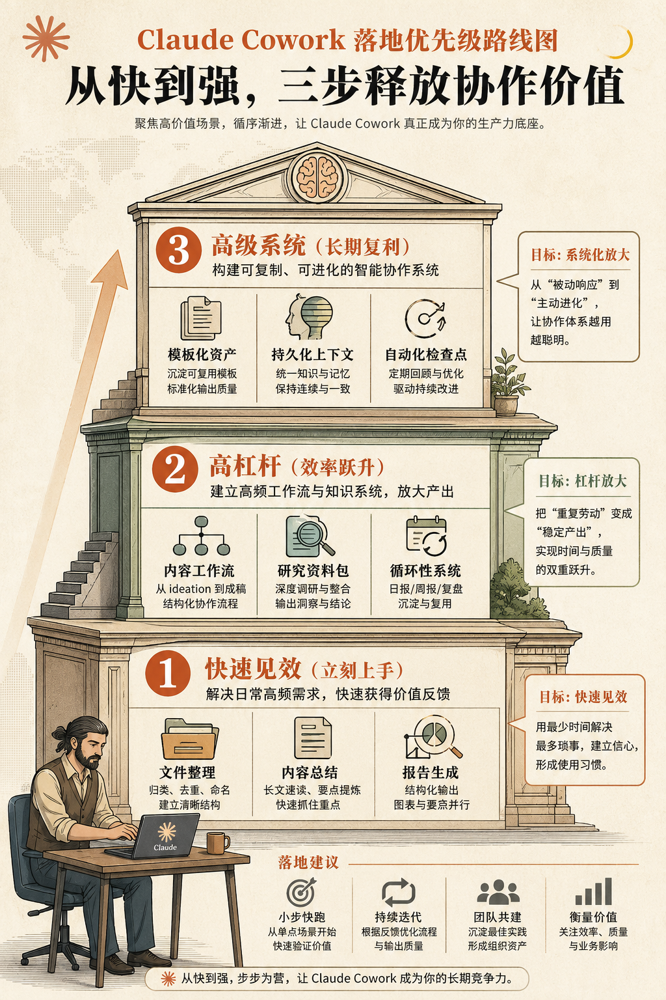

这篇文章，整理自 X 上一篇很火的长文，原标题是：
40 Claude Cowork Commands, Workflows & Automations Most Users Don’t Know — The Complete List
它最吸引人的地方，不是“40 个”这个数字，而是它提醒了很多人一件事：
Claude Cowork 真正的价值，不在于替你完成一个指令，而在于把一串原本需要你来回切换、重复确认、手动收尾的事情，变成一条可复用的工作流。
如果你现在对 Claude Cowork 的理解还停留在：
那你其实只用了它最浅的一层能力。
这篇整理版，我不准备把 40 条英文原句直接堆过来，而是做两件更实用的事：
多数人使用 Cowork 的方式，其实还是“聊天式使用”。
也就是：想到什么，就打一条；做完一步，再补一条；中间出错了，再自己接回来。
这种方式当然能用，但它更像是在用一个更会干活的聊天框。
而真正高手的用法，往往不是“给 Cowork 一个动作”，而是“给 Cowork 一段流程”。
也就是说，他们输入的不是：
而更像是：
这两者的差别，看起来只是“提示词更长一点”，其实本质完全不同。
前者是在让 AI 做动作。
后者是在让 AI 接手流程。

Claude Cowork 真正强的，也恰恰是后者。
如果要把原文的精神压缩成一句话，我会这样说：
Claude Cowork 不是一个“替你做一步”的助手，而是一个“替你跑完一段链路”的协作型执行者。
所以，真正高价值的命令、工作流和自动化，往往都有这几个特点：
理解了这一点，你就会知道，所谓“40 个命令”，其实更像 40 个可复用的协作模式。
为了更适合公众号阅读，我把原文这类思路，重组成 5 个你最可能真正会用到的场景。
这 5 类分别是：
下面我按这 5 类来拆。
这是大多数人第一次接触 Cowork 时最容易感受到“哇，原来真能替我干活”的地方。
因为文件整理这件事，本来就非常适合 AI 接手：
这类思路大概可以延展出 8 种典型命令：
这里最重要的，不是某一个命令写法，而是你要开始把它当成一种模板：
扫描 -> 分类 -> 重命名 -> 归档 -> 汇报
一旦你有了这个模板，很多文件类任务都能复用。
第二类高价值场景，是研究型工作。
很多人觉得 AI 搜资料并不稀奇，但真正费时间的从来不是“搜到”，而是：
这正是 Cowork 特别适合接手的地方。
这一类可以拆成 8 个常见用法：
如果说普通聊天 AI 更像“单点回答器”，那 Cowork 在这类工作里更像“研究助理”。
很多内容工作者第一次用 Cowork 时，会先让它“帮我写一篇文章”。
但更有效的方式，其实是把内容工作拆开，让它接手一整段内容链路。
比如：
原文这类思路，如果抽成中文用户最常用的场景，大概有 8 种：
这类任务最值钱的地方，不在于“它替你写”，而在于它替你完成内容从素材到成稿的中间工序。
如果你的工作里有很多运营、协调、整理、推进类事务，那 Cowork 的价值会更明显。
因为这些事情的共同特点是：
这部分也很容易延展出 8 个很实用的自动化思路：
这类工作最适合被标准化。
而 Cowork 的意义，就是把这些原本靠你“脑中记住流程”的任务，外显成可以重复调用的执行链。
最后一类，是很多人一开始不会想到，但长期回报很高的一类：
把 Cowork 接进你自己的个人效率系统。
不是只让它回答问题，而是让它围绕你的工作节奏、资料结构、习惯模板来持续协作。
这类思路也可以整理成 8 个方向：
一旦走到这一层，Cowork 对你就不再只是一个“偶尔用一下的 AI 功能”，而更像一个开始理解你做事方式的协作系统。
如果你真的打算开始用，不要一上来就追求最复杂的自动化。
最好的路径，通常是从这三层往上走：

先做那些立刻见效、失败成本也低的任务：
这类任务适合用来建立信任感。
再去做那些能持续省时间的流程：
这类任务会明显提高你对 Cowork 的依赖度。
最后，才是把它接成自己的系统：
到这里，Cowork 才真正从“工具”变成“协作接口”。
我觉得原文最值得借鉴的，不是记住某个具体命令，而是换一个视角去看 AI：
不要只问：
更要问：
一旦这么想，你会发现很多平时烦人的工作，其实都可以被重写成 Cowork 任务。
也就是说，真正的生产力提升，不是让 AI 替你“做一件事”，而是让它替你“接住一个重复链条”。
如果把这篇整理版压缩成一句话，那就是：
Claude Cowork 最值得学的，不是 40 个命令本身，而是 40 种把零散工作重组成流程、再把流程交给 AI 去推进的思路。
所以，对普通用户来说，最好的起点不是追求花哨，而是先做三件事：
当你开始这样用它，Claude Cowork 才会从“一个会聊天的桌面 AI”，变成“一个真正能替你分担工作的数字同事”。
说明：
这是一篇基于原始标题、导语预览和 Claude Cowork 公开工作流信息整理的中文导读版，用于公众号阅读，不是原文逐段直译。